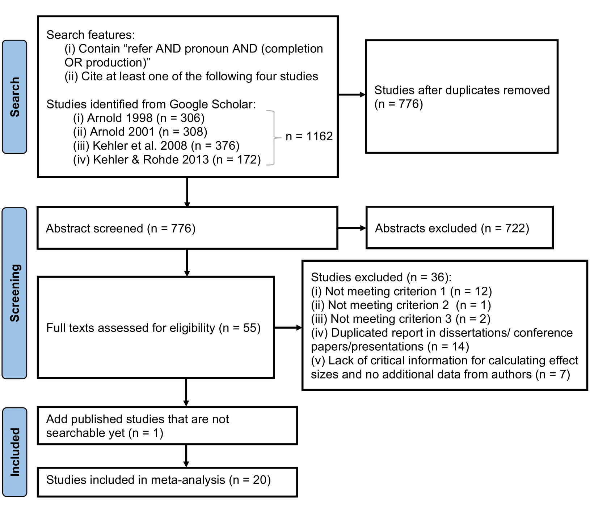
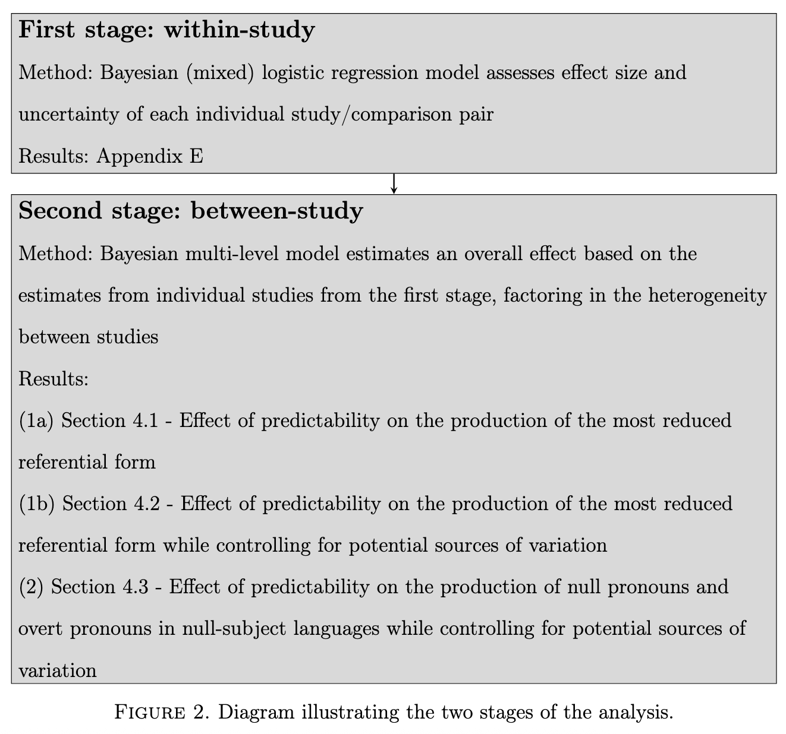
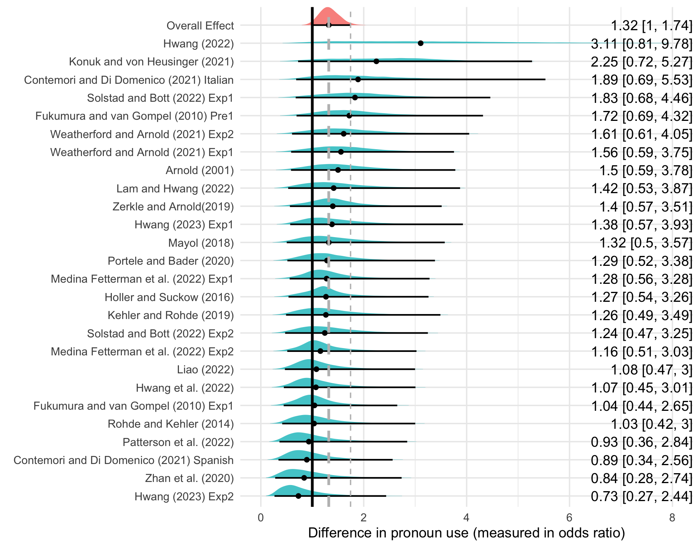
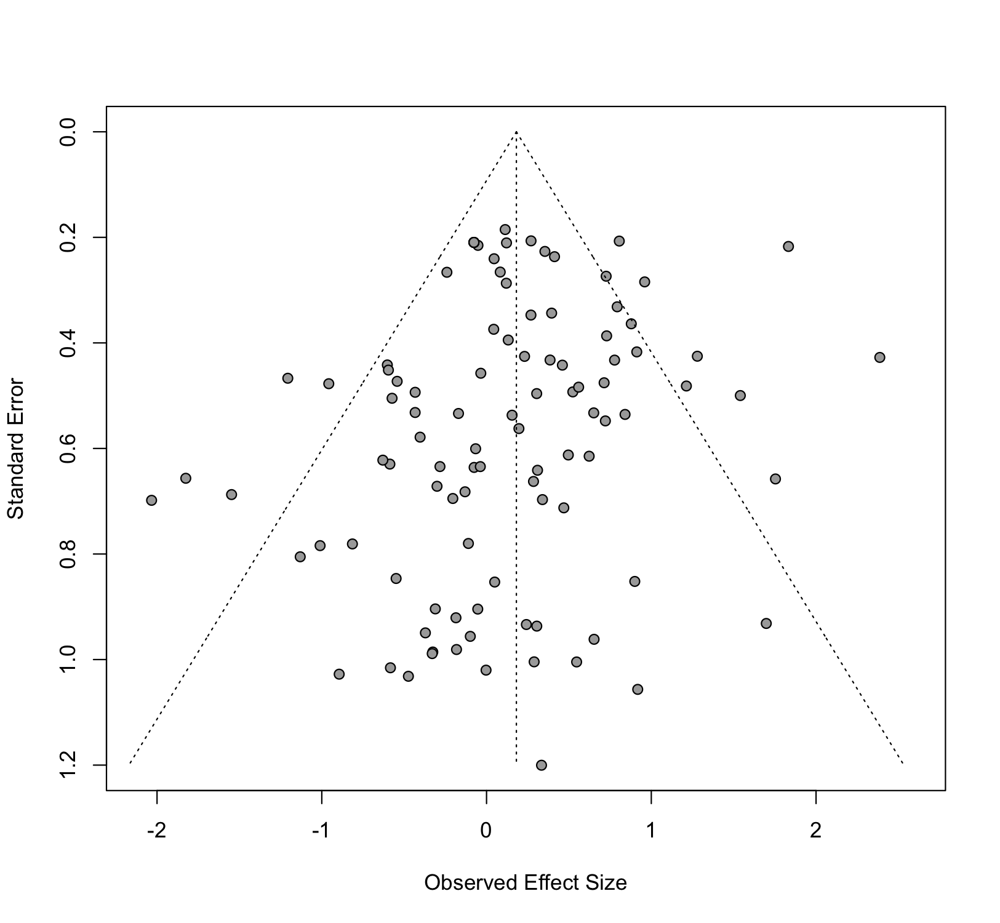
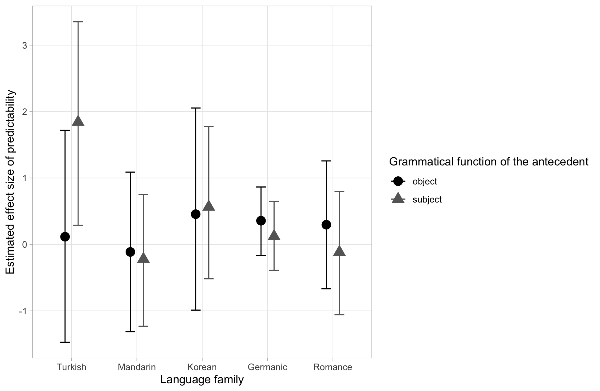

You conduct a meta analysis if there are multiple studies on an effect of interest. Intuitively, you want to be able to partially pool together the effects in a way that takes into consideration the uncertainty about the effect from each individual study, weighted by the sample size of the study.
From a technical perspective, this is a hierarchical model (AKA random-/mixed-effects model). There’s nothing different happening here. Most of the work goes into checking whether the statistical assumptions below serve our purposes.
We assume that each study \(i\) has a a mean \(\theta_i \sim \text{Normal}(\theta, \tau^2)\), with observed effect \(y_i \sim \text{Normal}(\theta_i, s_i^2)\), and \(s_i\) the standard error from study \(i\). In other words, we’re ultimately interested in unobserved \(\theta\) but what we observe is \(y_i\), the mean we get from each study \(i\). Together with \(s_i\) we can work backwards to estimate \(\theta\). Mutatis mutandis for other non-Normal effect of interest. The parameter \(\tau\) plays the key regularizing role in aggregating information across studies. See the end of the document if this is not evident from the above.
A few typical modelling challenges:
Study \(i\) doesn’t report \(\theta_i\) but something else. This something else can often be recast as \(\theta_i\), or we can calculate it ourselves;
Study \(i\) doesn’t report: \(s_i\), its raw data; the number of participants; or other values needed to fill the blanks. That is suboptimal since the ideal is to propagate uncertainty about \(\theta_i\) to our estimate of \(\theta\) and \(\tau\). But there are ways to address this.
From a conceptual perspective, the main question is if it makes sense to treat study \(i\) and study \(j\) as informing us about the same underlying \(\theta\). There is no point to aggregate information across studies if they study different things.
From a practical perspective, a lot of effort goes into systematically reviewing the literature and contacting authors for missing information. I will not go into the details of how to properly do a literature review here (do ask if interested) but see PRISMA statement.
Meta-analysis in Language Sciences
It is not (yet) all that common to conduct meta-analyses in language sciences. Two useful references to use as templates, and also to see how to deal with the roadblocks mentioned above:
Example: Referent predictability (Liao et al. 2025)
In Liao et al. (2025), we study whether referent predictability affects pronoun production:
Peter gave a book to Mary. _____
Possible continuations: he, she, Peter, Mary, …
Sketch of a question: Do we use reduced forms (e.g., a pronoun) more often for predictable referents?
Some factors that affect referent predictability:
Verb (give (Source-Goal) vs. catch (Goal-Source))
Discourse relations (Peter gave a book to Mary so… vs. because vs. …)
…
Some factors that may affect \(\theta_i\):
Predictable object vs. subject
Experimental setup (cloze task, corpus, …)
Experimental modality (written vs. oral vs. signed)
Language (family?). In particular, if it allows null subjects
…
The study in figures





Step by step with simulated data
In Liao et al. (2025) we study Pr(pronoun | referent.predictability), with the effect being log odds and the model a logistic regression. To use a more familiar distribution and identity as a link function, let’s assume the effect size to be in milliseconds, studying the relative advantage of two types of constructions: a positive \(y_i\) is an advantage of Construction I and a negative \(y_i\) the advantage of Construction II. I’ll use the notation and setup from Vasishth (2015):
In principle, we can also go further down and generate study-level data:
Code
generate_data <-function(n, mean, sd) {# 1. Generate n random numbers from Normal(0,1) initial_data <-rnorm(n)# 2. Standardize the data to have a sample mean of exactly 0 and sd of 1# That is: z-score the generated sample. standardized_data <- (initial_data -mean(initial_data)) /sd(initial_data)# 3. Scale and shift the standardized data to match the desired mean and sd final_data <- (standardized_data * sd) + meanreturn(final_data)}ms.delta <-c()study <-c()n_obs <- n_per_studyfor (i in1:n){ study_label <-rep(df_study_summary$study[i], times = n_obs[i]) ms.delta_study <-generate_data(n = n_obs[i], df_study_summary$ms.delta[i], sd.i) study <-c(study, study_label) ms.delta <-c(ms.delta, ms.delta_study)} df <-data.frame(study = study, ms.delta = ms.delta)print(head(df))
study ms.delta
1 Study 1 18.81253
2 Study 1 22.54600
3 Study 1 20.30073
4 Study 1 24.40315
5 Study 1 23.76150
6 Study 1 23.92795
For the sake of realism, we could also generate multiple ms.delta per participant ID and stimulus ID and maybe add a few different conditions per experiments. These hierarchies can be stacked in the usual way. For simplicity, we won’t do this here.
Here’s the empirical landscape for our imaginary meta-analysis:
We can see that, overall, the studies dance around true \(\theta\) but we can also see that some \(\theta_i\) are far above and some are below. This is why it’s important to not only conduct one study on the effect we’re interested in. And also why meta-analysis is so important: We want to be able to sensibly aggregate this information. Also, here we assumed that there is nothing odd happening in the literature, so the studies stochastically center around true \(\theta\). In reality, there will be many differences from study to study that will make \(\theta_i\) vary from one \(i\) to the next. Another reason to conduct a meta-analysis is to shed light on these factors (AKA moderators).
On to the model. We do not have any moderators (which can otherwise model as fixed-/random-effects) so we just model follow the specification above, estimating \(\theta\) based on \(\theta_i\) and \(s_i^2\):
Family: gaussian
Links: mu = identity; sigma = identity
Formula: ms.delta | se(stdE) ~ 1 + (1 | study)
Data: df_study_summary (Number of observations: 20)
Draws: 4 chains, each with iter = 6000; warmup = 3000; thin = 1;
total post-warmup draws = 12000
Multilevel Hyperparameters:
~study (Number of levels: 20)
Estimate Est.Error l-95% CI u-95% CI Rhat Bulk_ESS Tail_ESS
sd(Intercept) 5.13 0.89 3.74 7.20 1.00 1062 2124
Regression Coefficients:
Estimate Est.Error l-95% CI u-95% CI Rhat Bulk_ESS Tail_ESS
Intercept 16.06 1.14 13.76 18.35 1.00 982 1045
Further Distributional Parameters:
Estimate Est.Error l-95% CI u-95% CI Rhat Bulk_ESS Tail_ESS
sigma 0.00 0.00 0.00 0.00 NA NA NA
Draws were sampled using sampling(NUTS). For each parameter, Bulk_ESS
and Tail_ESS are effective sample size measures, and Rhat is the potential
scale reduction factor on split chains (at convergence, Rhat = 1).
Between study heterogeneity is estimated as \(\hat{\tau} = 5.13\) (\(\tau = 5\)). Individual studies’ deviation from \(\hat{\theta}\):
Code
ranef(m)
$study
, , Intercept
Estimate Est.Error Q2.5 Q97.5
Study 1 5.08147285 1.250733 2.6176111 7.5673976
Study 10 5.30174059 1.233778 2.8670650 7.7387871
Study 11 8.00291366 1.259214 5.4883763 10.4789250
Study 12 -0.06201958 1.525677 -3.0542862 2.9006140
Study 13 -3.90242918 1.297111 -6.5035524 -1.3262251
Study 14 -3.89391416 1.301451 -6.4493948 -1.2986424
Study 15 -5.15998793 1.223137 -7.6300573 -2.7330929
Study 16 0.58654994 1.214178 -1.8473425 2.9828366
Study 17 1.52602496 1.270210 -1.0073306 4.0482610
Study 18 -7.34391190 1.215575 -9.7648384 -4.9004665
Study 19 9.50462049 1.258570 7.0255228 12.0046020
Study 2 -4.42281040 1.275150 -6.9791906 -1.9036109
Study 20 1.78672896 1.235963 -0.7043511 4.2656960
Study 3 -1.17947170 1.366349 -3.8947137 1.5280288
Study 4 -3.58645113 1.224431 -6.0335788 -1.1153879
Study 5 5.20450168 1.301325 2.6050815 7.8192712
Study 6 -7.55591632 1.312237 -10.2068862 -4.9503500
Study 7 -1.56601347 1.249973 -4.0913068 0.9169966
Study 8 1.12729631 1.347010 -1.5246728 3.8228434
Study 9 1.84149720 1.287352 -0.7064879 4.3990182
A meta-analysis has (minimally) two levels. Within-study:
\[y_i \sim \text{Normal}(\theta_i, \sigma^2_i)\]
And between study:
\[\theta_i \sim \text{Normal}(\theta, \tau^2)\]
The between-study variance, \(\tau\) controls the pooling continuum. In the extreme, \(\tau = 0\) leads to full pooling: No between-study variance means we treat all studies as the same, \(\theta_i = \theta\). Any difference is attributed to sampling error (\(\sigma^2_i\)). On the other extreme, \(\tau \rightarrow \infty\) means that \(\theta\) is no informative about any \(\theta_i\) since each study is very different from one another. In between these extremes, partial pooling lives.
A high precision (small error), \(\frac{1}{\sigma^2_i}\), thus consequently means that \(y_i\) influences our estimate of \(\theta_i\) more. And, analogously, for \(\frac{1}{\tau^2}\). So small \(\tau\) generates strong pooling and large \(\tau\) weak pooling.
References
Liao, Xixian, Thomas Brochhagen, Gemma Boleda, and Laia Mayol. 2025. “The Role of Referent Predictability in Pronoun Production: Insights from a Bayesian Meta-Analysis.”Language vv: nn–.
Nicenboim, Bruno, Timo B Roettger, and Shravan Vasishth. 2018. “Using Meta-Analysis for Evidence Synthesis: The Case of Incomplete Neutralization in German.”Journal of Phonetics 70: 39–55.
Vasishth, Shravan. 2015. “A Meta-Analysis of Relative Clause Processing in Mandarin Chinese Using Bias Modelling.”